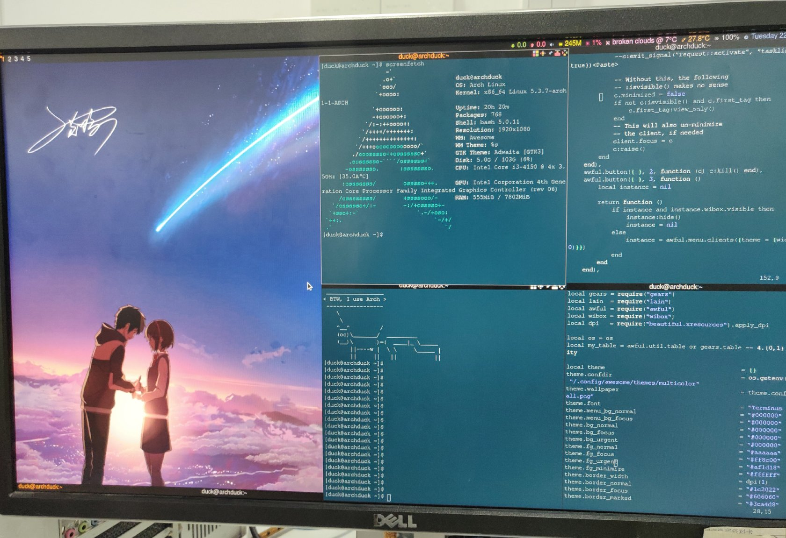
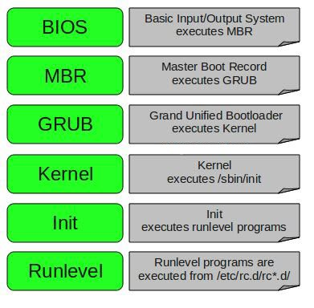

BTW, I use Arch
 rm -rf当然是假的啊，怎么可能失败？
ArchLinux Installation
Intro
ArchLinux是Linux的一个发行版。
特点
缺点
- 社区相对更小
- 出问题修复耗费时间
- 滚动更新带来的不稳定性
Environment
CPU.........: Intel(R) Core(TM) i3-4150 CPU @ 3.50GHz
MOTHERBOARD.: B85M-DS3H-A Gigabyte Technology Co., Ltd.
MEMORY......: 8GB
STORAGE.....: 120GB SSD
Installation Note
安装过程参照官方文档Installation guide及DistroTube的视频Arch Linux Installation Guide (2019)即可顺利完成。
History Commands
# 检查联网
ping www.baidu.com
timedatectl set-ntp true
# 划分磁盘
cfdisk
mkfs.ext4 /dev/sda1
mkswap /dev/sda2
swapon /dev/sda2
# 安装部分必要的包
vim /etc/pacman.d/mirrorlist
pacstrap /mnt base linux linux-firmware
# 生成fstab分区记录文件
genfstab -U /mnt >> /mnt/etc/fstab
# 切换至新系统root
arch-chroot /mnt
pacman -S vim
# 时区和主机设置
ln -sf /usr/share/zoneinfo/Asia/Shanghai /etc/localtime
hwclock --systohc
locale-gen
vim /etc/locale.conf
vim /etc/hostname
vim /etc/hosts
passwd
# 补充安装网络相关内容
pacman -S net-tools
pacman -S dhcpcd
# 启动dhcpcd
systemctl enable dhcpcd
# 创建普通用户 & sudo权限
useradd -m duck
pacman -S sudo
usermod -aG wheel,audio,video,storage duck
vim /etc/sudoers
passwd duck
# 安装grub 生成引导文件
pacman -S grub
grub-install /dev/sda
grub-mkconfig -o /boot/grub/grub.cfg
exit
boot
Troubleshooting
Legacy vs UEFI
Legacy BIOS是基于option ROMs的，ROM顾名思义是一些只读的信息，是厂商在设备出厂时写入的，通过读取option ROMs中的信息加载硬件。如果硬件升级后，也需要有对应的options ROMs才能够正常使用。不同厂商提供的信息不一样，没有通用标准，大小为64KB。
UEFI借助将驱动存放至文件系统中而非option ROMs解决这个问题。驱动可以以光盘、闪存等形式存在，由UEFI接口处理这些信息，保证兼容性。
延伸阅读： Difference Between UEFI and Legacy Boot
本次安装过程中在BIOS设置了使用Legacy模式启动。
分区划分
安装过程中使用了cfdisk代替fdisk进行分区，分区设置如下：
- 创建Primary分区并设置”Bootable”
- 创建Primary分区，类型设置为swap
AwesomeWM Setup
Xorg
Xorg是Linux系统上一个知名的display server。图形化界面（graphical interface）和窗口管理（windows manager）都是基于display server的。因此首先在安装AwesomeWM之前需要有Xorg。
Awesome Windows Manager
AwesomeWM顾名思义是个窗口管理工具。
xinit
xinit允许用户手动启动一个Xorg display server。通常来说就用用来启动WM或者GI的。
准备工作
基于上述内容，开始配置之前需要安装：
udo pacman -S xorg xorg-xinit awesome
当然，除了三件套以外还有一些相关的包，例如字体相关包，awesome默认设置了nano为编辑器，因此需要安装nano，默认设置了xtrem为终端，因此还需要安装xtrem等。
配置
awesome通过xinit运行，因此要修改xinit的配置文件让它从默认运行的WM（或者其他）改为运行awesome。
xinit配置
xinit配置在/etc/X11/xinit/xinitrc文件，复制一份到家目录下并更名：
/etc/X11/xinit/xinitrc ~/.xinitrc
mv /etc/X11/xinit/xinitrc /etc/X11/xinit/xinitrc.bak
这样xinit运行（startx)的时候会读取家目录下的配置。
vim打开.xinitrc有如下内容
#!/bin/sh
userresources=$HOME/.Xresources
usermodmap=$HOME/.Xmodmap
sysresources=/etc/X11/xinit/.Xresources
sysmodmap=/etc/X11/xinit/.Xmodmap
# merge in defaults and keymaps
if [ -f $sysresources ]; then
xrdb -merge $sysresources
fi
if [ -f $sysmodmap ]; then
xmodmap $sysmodmap
fi
if [ -f "$userresources" ]; then
xrdb -merge "$userresources"
fi
if [ -f "$usermodmap" ]; then
xmodmap "$usermodmap"
fi
# start some nice programs
if [ -d /etc/X11/xinit/xinitrc.d ] ; then
for f in /etc/X11/xinit/xinitrc.d/?*.sh ; do
[ -x "$f" ] && . "$f"
done
unset f
fi
xec awesome
默认示例配置中最后一段打开了3个不同大小的小窗口，其他内容直接省略，只需要保留# start some nice programs后的内容，运行程序修改为awesome：
#!/bin/sh
# start some nice programs
if [ -d /etc/X11/xinit/xinitrc.d ] ; then
for f in /etc/X11/xinit/xinitrc.d/?*.sh ; do
[ -x "$f" ] && . "$f"
done
unset f
fi
xec awesome
xinit配置完毕，执行startx即可运行配置中的内容。
awesome配置
awesome配置分为两部分：
- awesome全局配置
- theme配置
awesome全局配置
这部分配置控制awesome选择的主题、默认软件（编辑器、浏览器、终端等），是个lua脚本，示例文件在/etc/xdg/awesome/rc.lua，同样在家目录创建一份配置：
mkdir ~/.config
mkdir ~/.config/awesome
/etc/xdg/awesome/rc.lua ~/.config/awesome/rc.lua
theme配置
这部分配置控制具体的主题样式，包括各种图标、热键Mapping、颜色、壁纸、控件等等，通过改动theme配置可以实现高度自定义的awesome界面，示例文件目录在/usr/share/awesome/下，默认有：
- icons，图标
- lib，lua脚本目录
- themes，主题文件夹，默认包括几个示例主题
将默认的配置复制到家目录下：
usr/share/awesome/* ~/.config/awesome/
具体配置及效果示例
awesome默认使用xtrem作为终端，没有安装的情况下进入桌面是无法使用终端的。这里改用rxvt-unicode作为终端：
# 安装rxvt-unicode
sudo pacman -S rxvt-unicode
# 修改rc.lua
vim ~/.config/awesome/rc.lua
搜索关键词terminal并将：
terminal = "xtrem"
修改为：
terminal = "urxvtc"
awesome默认主题为default，并且提供了几个内置主题，将主题修改为sky：
vim ~/.config/awesome/rc.lua
搜索关键词theme并将：
utiful.init(gears.filesystem.get_themes_dir() .. "default/theme.lua")
修改为：
utiful.init("/home/duck/.config/awesome/themes/sky/theme.lua")
原代码使用lib中的gears.filesystem.get_themes_dir()方法拿到主题文件夹路径，正确配置之后可以直接修改主题名即可，这里示例使用了绝对路径。
主题默认壁纸在主题文件夹内，修改壁纸为自定义的图片：
vim ~/.config/awesome/themes/sky/theme.lua
搜索关键词wallpaper并将：
theme.wallpaper = themes_path .. "sky/sky-background.png"
修改为：
utiful.init("/home/duck/.config/awesome/themes/sky/my_background.png")
完成之后启动awesomeWM：
tartx
即可看到效果。
小结
awesomeWM可以理解为一个针对键盘操作而设计的窗口管理工具，通过使用awesomeWM可以快速完成各种终端管理，提高工作效率。通过配置awesome的主题可以添加很多控件，如日历、天气等，自定义出专属的生产工具。
Linux Booting Process
 Linux启动过程可以分为6个阶段
BIOS
BIOS主要进行系统完整性检查，它会查找和执行对应的boot loader程序，比如在CD-ROM中找boot loader、在硬盘中找boot loader等。当查找到boot loader后，加载boot loader进内存，控制权交至boot loader。
MBR
MBR即Master Boot Record，位于bootable磁盘的第一个扇区。MBR大小小于512bytes，由三部分组成：
- 主boot loader信息，在最前面的446bytes中
- 分区表信息，在随后的64bytes中
- MBR校验信息，在最后的2bytes中
它包含了GRUB相关信息，简单来说MBR加载和执行GRUB的boot loader。
GRUB
GRUB即Grand Unified Bootloader，它负责加载和执行内核和文件镜像。如果安装了多个内核的话可以允许用户选择加载的内核，否则按照配置问价加载默认项，配置即之前grub-mkconfig生成的文件：
#
# DO NOT EDIT THIS FILE
#
# It is automatically generated by grub-mkconfig using templates
# from /etc/grub.d and settings from /etc/default/grub
#
### BEGIN /etc/grub.d/00_header ###
insmod part_gpt
insmod part_msdos
if [ -s $prefix/grubenv ]; then
load_env
fi
if [ "${next_entry}" ] ; then
set default="${next_entry}"
set next_entry=
save_env next_entry
set boot_once=true
else
set default="0"
fi
if [ x"${feature_menuentry_id}" = xy ]; then
menuentry_id_option="--id"
else
menuentry_id_option=""
fi
export menuentry_id_option
if [ "${prev_saved_entry}" ]; then
set saved_entry="${prev_saved_entry}"
save_env saved_entry
set prev_saved_entry=
save_env prev_saved_entry
set boot_once=true
fi
function savedefault {
if [ -z "${boot_once}" ]; then
saved_entry="${chosen}"
save_env saved_entry
fi
}
function load_video {
if [ x$feature_all_video_module = xy ]; then
insmod all_video
else
insmod efi_gop
insmod efi_uga
insmod ieee1275_fb
insmod vbe
insmod vga
insmod video_bochs
insmod video_cirrus
fi
}
if [ x$feature_default_font_path = xy ] ; then
font=unicode
else
insmod part_msdos
insmod ext2
set root='hd0,msdos1'
if [ x$feature_platform_search_hint = xy ]; then
search --no-floppy --fs-uuid --set=root --hint-ieee1275='ieee1275//disk@0,msdos1' --hint-bios=hd0,msdos1 --hint-efi=hd0,msdos1 --hint-baremetal=ahci0,msdos1 0a869b77-d317-4b40-8fb1-ffa44721cce6
else
search --no-floppy --fs-uuid --set=root 0a869b77-d317-4b40-8fb1-ffa44721cce6
fi
font="/usr/share/grub/unicode.pf2"
fi
if loadfont $font ; then
set gfxmode=auto
load_video
insmod gfxterm
set locale_dir=$prefix/locale
set lang=en_US
insmod gettext
fi
terminal_input console
terminal_output gfxterm
if [ x$feature_timeout_style = xy ] ; then
set timeout_style=menu
set timeout=5
# Fallback normal timeout code in case the timeout_style feature is
# unavailable.
else
set timeout=5
fi
### END /etc/grub.d/00_header ###
### BEGIN /etc/grub.d/10_linux ###
menuentry 'Arch Linux' --class arch --class gnu-linux --class gnu --class os $menuentry_id_option 'gnulinux-simple-0a869b77-d317-4b40-8fb1-ffa44721cce6' {
load_video
set gfxpayload=keep
insmod gzio
insmod part_msdos
insmod ext2
set root='hd0,msdos1'
if [ x$feature_platform_search_hint = xy ]; then
search --no-floppy --fs-uuid --set=root --hint-ieee1275='ieee1275//disk@0,msdos1' --hint-bios=hd0,msdos1 --hint-efi=hd0,msdos1 --hint-baremetal=ahci0,msdos1 0a869b77-d317-4b40-8fb1-ffa44721cce6
else
search --no-floppy --fs-uuid --set=root 0a869b77-d317-4b40-8fb1-ffa44721cce6
fi
echo 'Loading Linux linux ...'
linux /boot/vmlinuz-linux root=UUID=0a869b77-d317-4b40-8fb1-ffa44721cce6 rw loglevel=3 quiet
echo 'Loading initial ramdisk ...'
initrd /boot/initramfs-linux.img
}
submenu 'Advanced options for Arch Linux' $menuentry_id_option 'gnulinux-advanced-0a869b77-d317-4b40-8fb1-ffa44721cce6' {
menuentry 'Arch Linux, with Linux linux' --class arch --class gnu-linux --class gnu --class os $menuentry_id_option 'gnulinux-linux-advanced-0a869b77-d317-4b40-8fb1-ffa44721cce6' {
load_video
set gfxpayload=keep
insmod gzio
insmod part_msdos
insmod ext2
set root='hd0,msdos1'
if [ x$feature_platform_search_hint = xy ]; then
search --no-floppy --fs-uuid --set=root --hint-ieee1275='ieee1275//disk@0,msdos1' --hint-bios=hd0,msdos1 --hint-efi=hd0,msdos1 --hint-baremetal=ahci0,msdos1 0a869b77-d317-4b40-8fb1-ffa44721cce6
else
search --no-floppy --fs-uuid --set=root 0a869b77-d317-4b40-8fb1-ffa44721cce6
fi
echo 'Loading Linux linux ...'
linux /boot/vmlinuz-linux root=UUID=0a869b77-d317-4b40-8fb1-ffa44721cce6 rw loglevel=3 quiet
echo 'Loading initial ramdisk ...'
initrd /boot/initramfs-linux.img
}
menuentry 'Arch Linux, with Linux linux (fallback initramfs)' --class arch --class gnu-linux --class gnu --class os $menuentry_id_option 'gnulinux-linux-fallback-0a869b77-d317-4b40-8fb1-ffa44721cce6' {
load_video
set gfxpayload=keep
insmod gzio
insmod part_msdos
insmod ext2
set root='hd0,msdos1'
if [ x$feature_platform_search_hint = xy ]; then
search --no-floppy --fs-uuid --set=root --hint-ieee1275='ieee1275//disk@0,msdos1' --hint-bios=hd0,msdos1 --hint-efi=hd0,msdos1 --hint-baremetal=ahci0,msdos1 0a869b77-d317-4b40-8fb1-ffa44721cce6
else
search --no-floppy --fs-uuid --set=root 0a869b77-d317-4b40-8fb1-ffa44721cce6
fi
echo 'Loading Linux linux ...'
linux /boot/vmlinuz-linux root=UUID=0a869b77-d317-4b40-8fb1-ffa44721cce6 rw loglevel=3 quiet
echo 'Loading initial ramdisk ...'
initrd /boot/initramfs-linux-fallback.img
}
}
### END /etc/grub.d/10_linux ###
### BEGIN /etc/grub.d/20_linux_xen ###
### END /etc/grub.d/20_linux_xen ###
### BEGIN /etc/grub.d/30_os-prober ###
### END /etc/grub.d/30_os-prober ###
### BEGIN /etc/grub.d/40_custom ###
# This file provides an easy way to add custom menu entries. Simply type the
# menu entries you want to add after this comment. Be careful not to change
# the 'exec tail' line above.
### END /etc/grub.d/40_custom ###
### BEGIN /etc/grub.d/41_custom ###
if [ -f ${config_directory}/custom.cfg ]; then
source ${config_directory}/custom.cfg
elif [ -z "${config_directory}" -a -f $prefix/custom.cfg ]; then
source $prefix/custom.cfg;
fi
### END /etc/grub.d/41_custom ###
Kernel
内核负责根据grub.cfg中声明的root='hd0,msdos1'挂载文件系统，并且执行/sbin/init的程序。因为init是第一个被Linux内核执行的程序，所以ps aux | grep init的pid为1。
t 1 0.0 0.0 165304 10528 ? Ss 11:45 0:13 /sbin/init splash
grub.cfg中有一行：
initrd /boot/initramfs-linux.img
initrd即初始化RAM Disk，使用initramfs-linux.img镜像，作为临时的root文件系统，直到启动后真正的文件系统挂载。initrd同时还包括了一些必要的驱动，让内核可以获取分区和硬件等信息。
Init
查看/etc/inittab文件来决定Linux运行的Level，具体包括以下7个Level：
- 0 – halt
- 1 – Single user mode
- 2 – Multiuser, without NFS
- 3 – Full multiuser mode
- 4 – unused
- 5 – X11
- 6 – reboot
Init根据文件决定默认的initlevel，加载所有相关的程序。
Runlevel
Linux启动时，你会看到各种服务启动，比如“starting sendmail …. OK”，这些都是Runlevel的程序，不同的runlevel在相应的目录中：
# Run level ?
/etc/rc.d/rc?.d/
在目录下有“S”和“K”开头的程序，S代表startup的时候运行，K代表kill的时候运行。
Linux Command Analysis
以free命令为例分析执行过程。
free
free命令源码参考procps。节选如下：
int main(int argc, char **argv)
{
int c, flags = 0, unit_set = 0;
struct commandline_arguments args;
/*
* For long options that have no equivalent short option, use a
* non-character as a pseudo short option, starting with CHAR_MAX + 1.
*/
enum {
SI_OPTION = CHAR_MAX + 1,
KILO_OPTION,
MEGA_OPTION,
GIGA_OPTION,
TERA_OPTION,
PETA_OPTION,
TEBI_OPTION,
PEBI_OPTION,
HELP_OPTION
};
static const struct option longopts[] = {
{ "bytes", no_argument, NULL, 'b' },
{ "kilo", no_argument, NULL, KILO_OPTION },
{ "mega", no_argument, NULL, MEGA_OPTION },
{ "giga", no_argument, NULL, GIGA_OPTION },
{ "tera", no_argument, NULL, TERA_OPTION },
{ "peta", no_argument, NULL, PETA_OPTION },
{ "kibi", no_argument, NULL, 'k' },
{ "mebi", no_argument, NULL, 'm' },
{ "gibi", no_argument, NULL, 'g' },
{ "tebi", no_argument, NULL, TEBI_OPTION },
{ "pebi", no_argument, NULL, PEBI_OPTION },
{ "human", no_argument, NULL, 'h' },
{ "si", no_argument, NULL, SI_OPTION },
{ "lohi", no_argument, NULL, 'l' },
{ "total", no_argument, NULL, 't' },
{ "seconds", required_argument, NULL, 's' },
{ "count", required_argument, NULL, 'c' },
{ "wide", no_argument, NULL, 'w' },
{ "help", no_argument, NULL, HELP_OPTION },
{ "version", no_argument, NULL, 'V' },
{ NULL, 0, NULL, 0 }
};
/* defaults */
args.exponent = 0;
args.repeat_interval = 1000000;
args.repeat_counter = 0;
#ifdef HAVE_PROGRAM_INVOCATION_NAME
program_invocation_name = program_invocation_short_name;
#endif
setlocale (LC_ALL, "");
bindtextdomain(PACKAGE, LOCALEDIR);
textdomain(PACKAGE);
atexit(close_stdout);
while ((c = getopt_long(argc, argv, "bkmghltc:ws:V", longopts, NULL)) != -1)
switch (c) {
case 'b':
check_unit_set(&unit_set);
args.exponent = 1;
break;
case 'k':
check_unit_set(&unit_set);
args.exponent = 2;
break;
case 'm':
check_unit_set(&unit_set);
args.exponent = 3;
break;
case 'g':
check_unit_set(&unit_set);
args.exponent = 4;
break;
case TEBI_OPTION:
check_unit_set(&unit_set);
args.exponent = 5;
break;
case PEBI_OPTION:
check_unit_set(&unit_set);
args.exponent = 6;
break;
case KILO_OPTION:
check_unit_set(&unit_set);
args.exponent = 2;
flags |= FREE_SI;
break;
case MEGA_OPTION:
check_unit_set(&unit_set);
args.exponent = 3;
flags |= FREE_SI;
break;
case GIGA_OPTION:
check_unit_set(&unit_set);
args.exponent = 4;
flags |= FREE_SI;
break;
case TERA_OPTION:
check_unit_set(&unit_set);
args.exponent = 5;
flags |= FREE_SI;
break;
case PETA_OPTION:
check_unit_set(&unit_set);
args.exponent = 6;
flags |= FREE_SI;
break;
case 'h':
flags |= FREE_HUMANREADABLE;
break;
case SI_OPTION:
flags |= FREE_SI;
break;
case 'l':
flags |= FREE_LOHI;
break;
case 't':
flags |= FREE_TOTAL;
break;
case 's':
flags |= FREE_REPEAT;
errno = 0;
args.repeat_interval = (1000000 * strtod_nol_or_err(optarg, "seconds argument failed"));
if (args.repeat_interval < 1)
xerrx(EXIT_FAILURE,
_("seconds argument `%s' is not positive number"), optarg);
break;
case 'c':
flags |= FREE_REPEAT;
flags |= FREE_REPEATCOUNT;
args.repeat_counter = strtol_or_err(optarg,
_("failed to parse count argument"));
if (args.repeat_counter < 1)
error(EXIT_FAILURE, ERANGE,
_("failed to parse count argument: '%s'"), optarg);
break;
case 'w':
flags |= FREE_WIDE;
break;
case HELP_OPTION:
usage(stdout);
case 'V':
printf(PROCPS_NG_VERSION);
exit(EXIT_SUCCESS);
default:
usage(stderr);
}
do {
meminfo();
/* Translation Hint: You can use 9 character words in
* the header, and the words need to be right align to
* beginning of a number. */
if (flags & FREE_WIDE) {
printf(_(" total used free shared buffers cache available"));
} else {
printf(_(" total used free shared buff/cache available"));
}
printf("\n");
printf("%-7s", _("Mem:"));
printf(" %11s", scale_size(kb_main_total, flags, args));
printf(" %11s", scale_size(kb_main_used, flags, args));
printf(" %11s", scale_size(kb_main_free, flags, args));
printf(" %11s", scale_size(kb_main_shared, flags, args));
if (flags & FREE_WIDE) {
printf(" %11s", scale_size(kb_main_buffers, flags, args));
printf(" %11s", scale_size(kb_main_cached, flags, args));
} else {
printf(" %11s", scale_size(kb_main_buffers+kb_main_cached, flags, args));
}
printf(" %11s", scale_size(kb_main_available, flags, args));
printf("\n");
/*
* Print low vs. high information, if the user requested it.
* Note we check if low_total == 0: if so, then this kernel
* does not export the low and high stats. Note we still want
* to print the high info, even if it is zero.
*/
if (flags & FREE_LOHI) {
printf("%-7s", _("Low:"));
printf(" %11s", scale_size(kb_low_total, flags, args));
printf(" %11s", scale_size(kb_low_total - kb_low_free, flags, args));
printf(" %11s", scale_size(kb_low_free, flags, args));
printf("\n");
printf("%-7s", _("High:"));
printf(" %11s", scale_size(kb_high_total, flags, args));
printf(" %11s", scale_size(kb_high_total - kb_high_free, flags, args));
printf(" %11s", scale_size(kb_high_free, flags, args));
printf("\n");
}
printf("%-7s", _("Swap:"));
printf(" %11s", scale_size(kb_swap_total, flags, args));
printf(" %11s", scale_size(kb_swap_used, flags, args));
printf(" %11s", scale_size(kb_swap_free, flags, args));
printf("\n");
if (flags & FREE_TOTAL) {
printf("%-7s", _("Total:"));
printf(" %11s", scale_size(kb_main_total + kb_swap_total, flags, args));
printf(" %11s", scale_size(kb_main_used + kb_swap_used, flags, args));
printf(" %11s", scale_size(kb_main_free + kb_swap_free, flags, args));
printf("\n");
}
fflush(stdout);
if (flags & FREE_REPEATCOUNT) {
args.repeat_counter--;
if (args.repeat_counter < 1)
exit(EXIT_SUCCESS);
}
if (flags & FREE_REPEAT) {
printf("\n");
usleep(args.repeat_interval);
}
} while ((flags & FREE_REPEAT));
exit(EXIT_SUCCESS);
}
可以观察到命令主要做了几件事：
- 执行meminfo()方法
- 根据输入参数，进行格式转换、单位转换等
meminfo()方法并不在free.c中，全局查找定位到sysinfo.c文件中：
void meminfo(void){
char namebuf[32]; /* big enough to hold any row name */
int linux_version_code = procps_linux_version();
mem_table_struct findme = { namebuf, NULL};
mem_table_struct *found;
char *head;
char *tail;
static const mem_table_struct mem_table[] = {
{"Active", &kb_active}, // important
{"Active(file)", &kb_active_file},
{"AnonPages", &kb_anon_pages},
{"Bounce", &kb_bounce},
{"Buffers", &kb_main_buffers}, // important
{"Cached", &kb_page_cache}, // important
{"CommitLimit", &kb_commit_limit},
{"Committed_AS", &kb_committed_as},
{"Dirty", &kb_dirty}, // kB version of vmstat nr_dirty
{"HighFree", &kb_high_free},
{"HighTotal", &kb_high_total},
{"Inact_clean", &kb_inact_clean},
{"Inact_dirty", &kb_inact_dirty},
{"Inact_laundry",&kb_inact_laundry},
{"Inact_target", &kb_inact_target},
{"Inactive", &kb_inactive}, // important
{"Inactive(file)",&kb_inactive_file},
{"LowFree", &kb_low_free},
{"LowTotal", &kb_low_total},
{"Mapped", &kb_mapped}, // kB version of vmstat nr_mapped
{"MemAvailable", &kb_main_available}, // important
{"MemFree", &kb_main_free}, // important
{"MemTotal", &kb_main_total}, // important
{"NFS_Unstable", &kb_nfs_unstable},
{"PageTables", &kb_pagetables}, // kB version of vmstat nr_page_table_pages
{"ReverseMaps", &nr_reversemaps}, // same as vmstat nr_page_table_pages
{"SReclaimable", &kb_slab_reclaimable}, // "slab reclaimable" (dentry and inode structures)
{"SUnreclaim", &kb_slab_unreclaimable},
{"Shmem", &kb_main_shared}, // kernel 2.6.32 and later
{"Slab", &kb_slab}, // kB version of vmstat nr_slab
{"SwapCached", &kb_swap_cached},
{"SwapFree", &kb_swap_free}, // important
{"SwapTotal", &kb_swap_total}, // important
{"VmallocChunk", &kb_vmalloc_chunk},
{"VmallocTotal", &kb_vmalloc_total},
{"VmallocUsed", &kb_vmalloc_used},
{"Writeback", &kb_writeback}, // kB version of vmstat nr_writeback
};
const int mem_table_count = sizeof(mem_table)/sizeof(mem_table_struct);
unsigned long watermark_low;
signed long mem_available, mem_used;
FILE_TO_BUF(MEMINFO_FILE,meminfo_fd);
kb_inactive = ~0UL;
kb_low_total = kb_main_available = 0;
head = buf;
for(;;){
tail = strchr(head, ':');
if(!tail) break;
*tail = '\0';
if(strlen(head) >= sizeof(namebuf)){
head = tail+1;
goto nextline;
}
strcpy(namebuf,head);
found = bsearch(&findme, mem_table, mem_table_count,
sizeof(mem_table_struct), compare_mem_table_structs
);
head = tail+1;
if(!found) goto nextline;
*(found->slot) = (unsigned long)strtoull(head,&tail,10);
nextline:
tail = strchr(head, '\n');
if(!tail) break;
head = tail+1;
}
if(!kb_low_total){ /* low==main except with large-memory support */
kb_low_total = kb_main_total;
kb_low_free = kb_main_free;
}
if(kb_inactive==~0UL){
kb_inactive = kb_inact_dirty + kb_inact_clean + kb_inact_laundry;
}
kb_main_cached = kb_page_cache + kb_slab_reclaimable;
kb_swap_used = kb_swap_total - kb_swap_free;
/* if kb_main_available is greater than kb_main_total or our calculation of
mem_used overflows, that's symptomatic of running within a lxc container
where such values will be dramatically distorted over those of the host. */
if (kb_main_available > kb_main_total)
kb_main_available = kb_main_free;
mem_used = kb_main_total - kb_main_free - kb_main_cached - kb_main_buffers;
if (mem_used < 0)
mem_used = kb_main_total - kb_main_free;
kb_main_used = (unsigned long)mem_used;
/* zero? might need fallback for 2.6.27 <= kernel <? 3.14 */
if (!kb_main_available) {
#ifdef __linux__
if (linux_version_code < LINUX_VERSION(2, 6, 27))
kb_main_available = kb_main_free;
else {
FILE_TO_BUF(VM_MIN_FREE_FILE, vm_min_free_fd);
kb_min_free = (unsigned long) strtoull(buf,&tail,10);
watermark_low = kb_min_free * 5 / 4; /* should be equal to sum of all 'low' fields in /proc/zoneinfo */
mem_available = (signed long)kb_main_free - watermark_low
+ kb_inactive_file + kb_active_file - MIN((kb_inactive_file + kb_active_file) / 2, watermark_low)
+ kb_slab_reclaimable - MIN(kb_slab_reclaimable / 2, watermark_low);
if (mem_available < 0) mem_available = 0;
kb_main_available = (unsigned long)mem_available;
}
#else
kb_main_available = kb_main_free;
#endif /* linux */
}
}
主要进行了：
- 定义数据格式mem_table_struct
- 执行FILE_TO_BUF(MEMINFO_FILE, meminfo_fd)，这里的MEMINFO_FILE在上文有定义
#define MEMINFO_FILE "/proc/meminfo"，meminfo_fd同样有定义为-1 - 后续主要对stdout内容进行计算，例如
mem_used = kb_main_total - kb_main_free - kb_main_cached - kb_main_buffers，以及异常数值处理，例如当上面计算得出的mem_used为负值时，重新以mem_used = kb_main_total - kb_main_free计算
FILE_TO_BUF方法具体没有找到定义，在sysinfo.c中有一段相关注释代码如下：
#define FILE_TO_BUF(filename, fd) do{ \
static int local_n; \
if (fd == -1 && (fd = open(filename, O_RDONLY)) == -1) { \
fputs(BAD_OPEN_MESSAGE, stderr); \
fflush(NULL); \
_exit(102); \
} \
lseek(fd, 0L, SEEK_SET); \
if ((local_n = read(fd, buf, sizeof buf - 1)) < 0) { \
perror(filename); \
fflush(NULL); \
_exit(103); \
} \
buf[local_n] = '\0'; \
}while(0)
可以看到FILE_TO_BUF()主要进行了：
- fd默认-1，表示未打开
- 尝试打开对应文件（如/proc/meminfo），赋给fd，成功则fd改变，否则fputs打开失败消息，退出
- 打开成功，读取fd内容，放入buf中
总结free命令从读取/proc/meminfo到显示过程：
- 尝试打开/proc/meminfo，成功则暂存至变量，失败退出
- 读取暂存的变量，根据定义的数据结构，将各个值放至对应字段
- 根据读取的数值，计算一些统计值，如已使用内存=总内存-可用内存，并进行对应的异常处理
- 处理完毕的数据，根据free命令的参数，进行格式转换，如：kb、gb间的转换；根据-h参数决定是否添加单位；根据参数决定字段是否要显示等
- 输出格式化（类似表格形式）后的内容